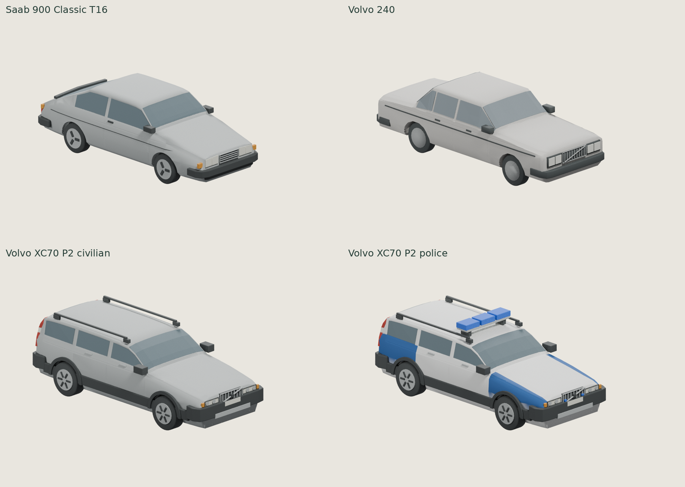

Vehicle refinement · round 2
Three existing Blender bodies, four exports. Geometry and component quality refined from the latest first-round masters. No game integration. Left = before, right = after; cameras and lighting are fixed within each comparison. Tap PNGs to inspect at full resolution.
Fleet · identical physical scale, camera and lighting
All four cells use the same orthographic Cycles camera, world bounds, lights and pixel scale. No per-car fit-to-frame scaling.
First-round fleet for comparison

| Export | Triangles | glTF primitives | Wheelbase | Validation |
|---|
| Saab 900 Classic T16 | 9,612 | 39 | 2.517 m | Pass |
| Volvo 240 | 10,436 | 31 | 2.650 m | Pass |
| Volvo XC70 P2 civilian | 14,134 | 57 | 2.763 m | Pass |
| Volvo XC70 P2 police | 14,486 | 65 | 2.763 m | Pass |
Passing geometry is not an appearance approval. No physical Safari/GPU or in-game driving test. Glazing remains opaque; no interior is modelled. Existing procedural game cars, physics, traffic and main are unchanged.
XC70 · shared architecture and window correction
model.py owns body, openings, glass and lamps once. round2.py adds shared form refinements. variants.py changes paint and equipment visibility. The existing review/export process produces both GLBs from that one master.
Every one of the 55 common mesh nodes matches in the actual exports. A temporary 0.2% rear-aperture width mutation was applied once to the shared scene, exported twice and compared: both exports received identical geometry. The delivered master was not changed by the test.
Rear glass: 1315 × 365 mm → 1271 × 412 mm; width/height 3.60 → 3.08. Lower edge drops 47.6 mm; upper edge is essentially retained. Both the manufacturer rear view and 2006 facelift photo support a taller, less letterbox-like aperture. The photo’s black surround includes frit/seals, so its boundaries are not an exact clear-glass CAD measurement.
Found causes: 34 glass/tail-lamp intersection candidates per side and near-coplanar glass backing. Corrected by narrowing the hidden inner housing wall, defining a painted land beside the glass, and using pane-wise outward seating with positive back clearance. Now 0 lamp/glass intersection candidates, 0 back-face coincidence samples, minimum backing clearance 1.50 mm. No police equipment/glass intersections were found; there was no duplicate police glazing.
Inside diagnostics below isolate the shared glass and hide the opaque backing body. These inspect pane orientation/edges and do not depict a finished interior.
Saab · silhouette guardrail
Existing wheel-centre-normalized verifier rerun against the same manufacturer three-door illustration proxy: IoU 0.9147 → 0.9154; regional hood mean absolute error 7.53 → 6.57 canonical pixels. Maximum local error remains 20 px. This is a pre-facelift stylized drawing, not exact 1988 T16 metric approval; the real facelift photograph remains the front-volume reference.
Checks and limits
All bodies are closed and consistently wound, with positive volume, no degenerates or nonadjacent BVH self-intersection candidates. All four GLBs pass the unchanged repository validator, actual Blender reimport and existing Three r128 parser. Transient pose tests verify independent wheel hubs, rim/spoke steering and spin, and body-mounted glass/lights/trim following body motion. These are structural tests, not new driving behaviour.
5 vehicle validator tests, 11 silhouette numerical tests and 6 shared-geometry regression tests pass. Civilian body paint remains independently editable. Blue light names/materials remain separate; POLIS lettering and yellow paint are absent. No LOD or several-car GPU benchmark was added. Factory-perfect dimensions, exhaustive all-component collision proof and human visual approval are not claimed.
Reference images: original manufacturer technical-study excerpts; Alexander Migl / Vauxford / Ethan Llamas under their recorded CC BY-SA licences; Bull-Doser public domain. No reference photograph is embedded in a game model or used as a texture. Full attribution and source limits remain in each reference register.